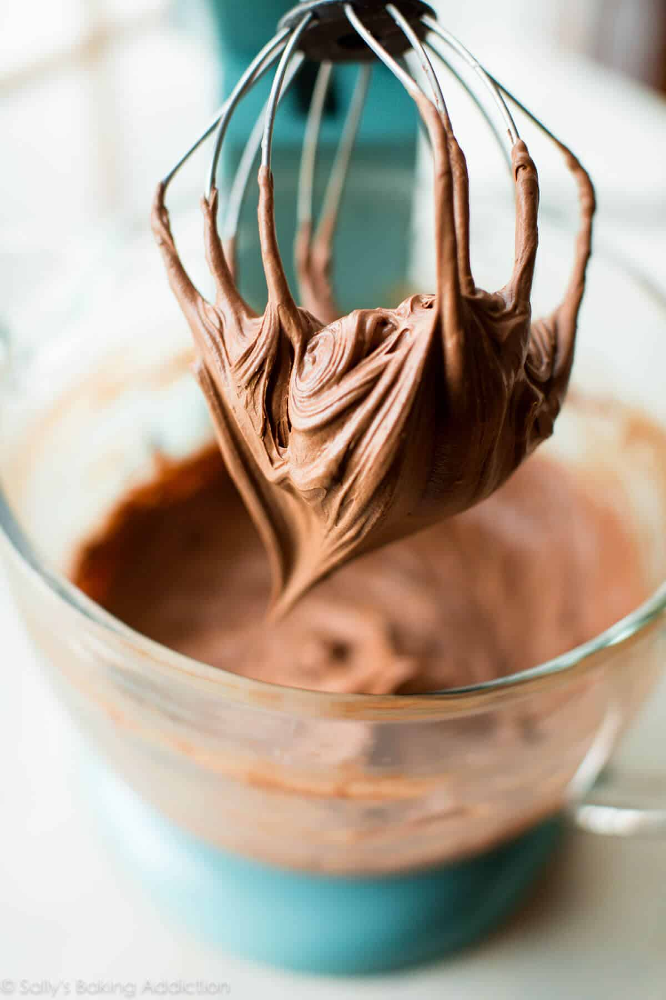
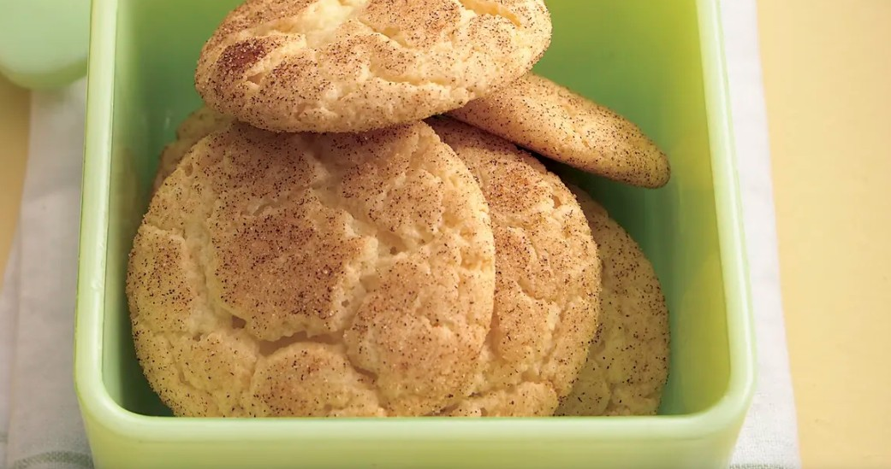

| Ingredients | Quantity |
|---|---|
| Cream Cheese | 8 oz |
| Unsalted butter | 1/2 cup |
| Powdered sugar | 3 cups |
| Vanilla | 1 tsp |
| Salt | Pinch |
Step 1: Beat the cream cheese and butter together.
Step 2: Slowly mix in the powdered sugar and cocoa.
Step 3: Add the vanilla and salt, then frost cooled cake.
Source: Chocolate Cream Cheese Frosting

| Ingredients | Quantity |
|---|---|
| Yellow cake mix | 1 box |
| Eggs | 2 |
| Oil | 1/3 cup |
| Sugar | 1/4 cup |
| Cinnamon | 1 tsp |
Step 1: Mix cake mix, eggs, and oil.
Step 2: Roll dough in cinnamon sugar.
Step 3: Bake until set and lightly golden.
Source: Cake Mix Snickerdoodles
| Ingredients | Quantity |
|---|---|
| Corn kernels | 4 cups |
| Broth | 3 cups |
| Cream | 1 cup |
| Onion | 1 small |
| Butter | 2 tbsp |
| Salt and Pepper | To taste |
Step 1: Cook onion in butter.
Step 2: Add corn and broth, then simmer.
Step 3: Blend part of soup, stir in cream, and season.
Source: Creamy Corn Bisque